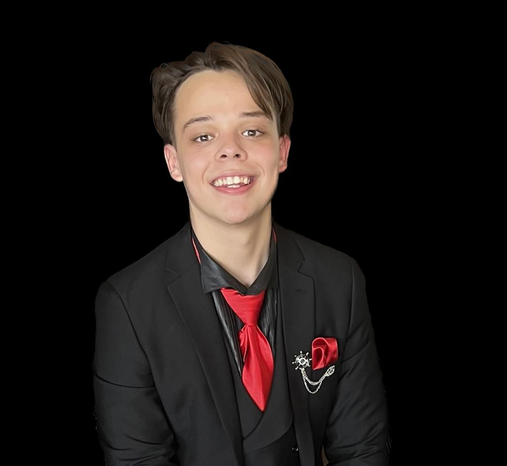

Francois le Grange

PROFILE
A Computer Science student at the University of Johannesburg with a strong academic achievement.
Possess strong leadership and communication skills with fluency in English and Afrikaans. Keen to
pursue a career in Computer Science with a focus on Cybersecurity.
EDUCATION
- University of Johannesburg | Johannesburg, South Africa (Feb 2023 – present)
- BSc Computer Science
- Predicted Grade : Cum Laude
- Key Modules: Computer Science, Informatics, Mathematics and Applied Mathematics
- Award: Member of UJenius Club and an Orange Carpet Student
- Rand Park high School | Johannesburg, South Africa (Jan 2018 – Dec 2022)
- A-Levels (Jan 2018 – Dec 2022)
- Subjects: Maths(A), English(B), Afrikaans(A), Science(A), IT(A), CAT(A), LO(A)
ACHIEVEMENTS
- No. 1 IT Student at Rand Park High School (2018, 2019, 2020)
- UJenius Club at University of Johannesburg (2023)
- Orange Carpet at University of Johannesburg (2023)
ADDITIONAL SKILLS
- Languages: English (Fluent), Afrikaans (Fluent)
- Microsoft Office: Proficient in Word, Excel and Access
- Programming: Proficient in Delphi, and Furthering my skills in C++ and Visual Basic
HOBBIES & INTERESTS
- Guitar: Started playing in 2017 and gradually improved over the years and still play occasionally.
- Gym: Started going to the gym in 2019 and have been loving it ever since
- Video Games: I enjoy unwinding from time to time playing video games.
- Family and Friends: I enjoy spending time with my family and friends
OTHER